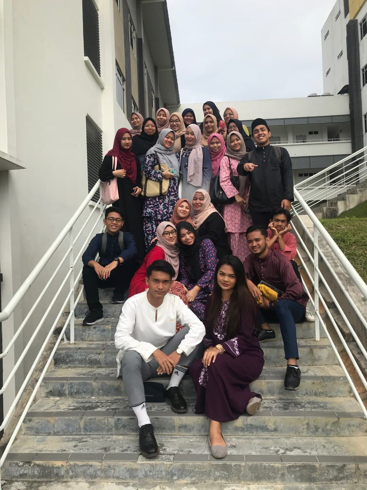
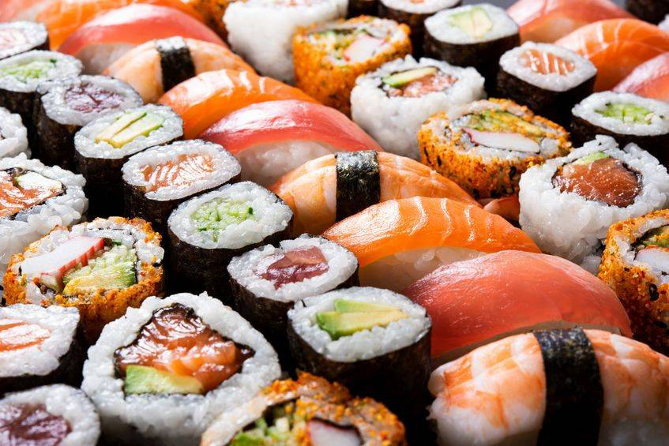
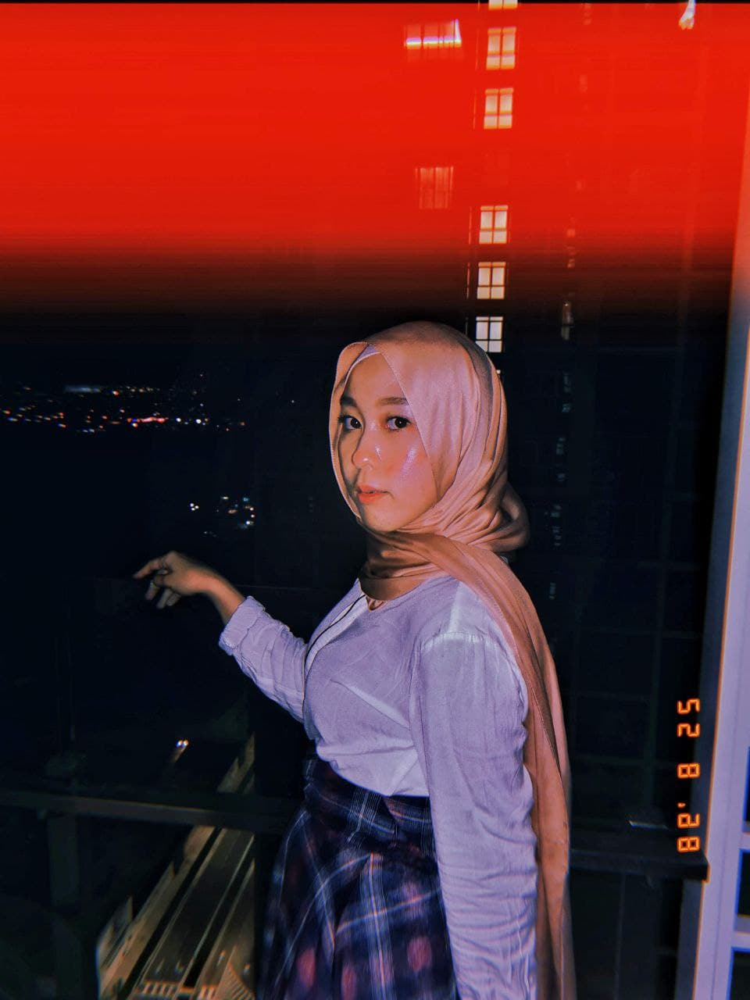
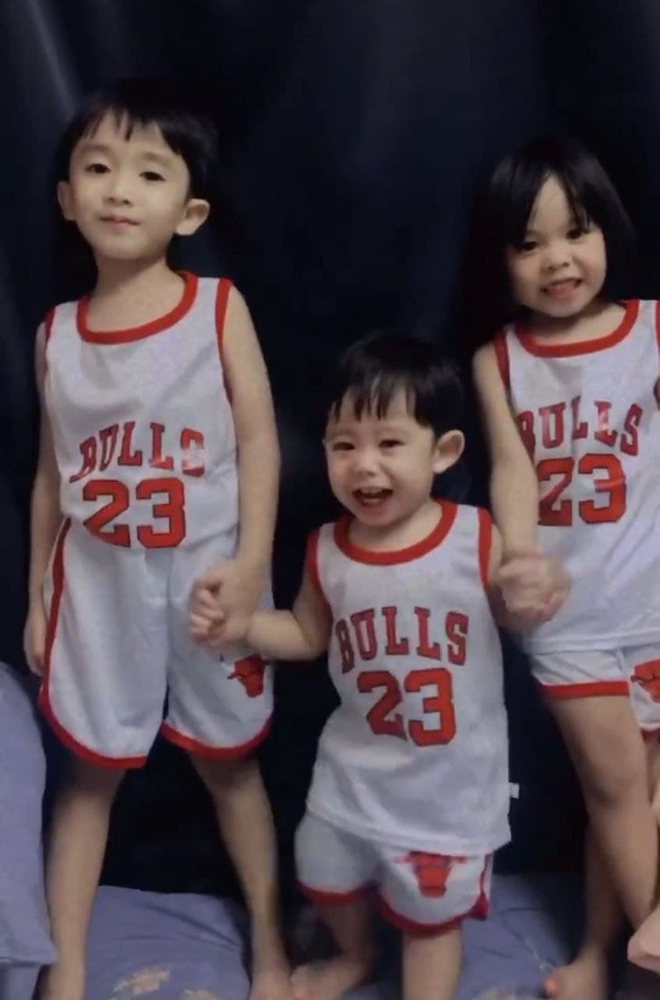
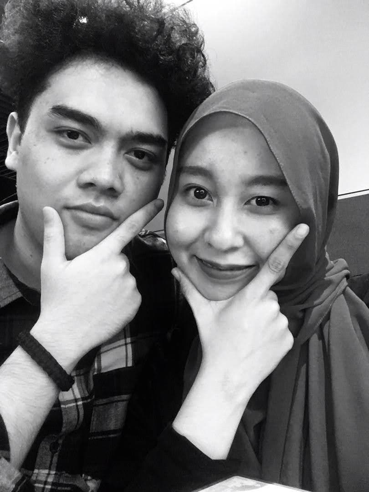
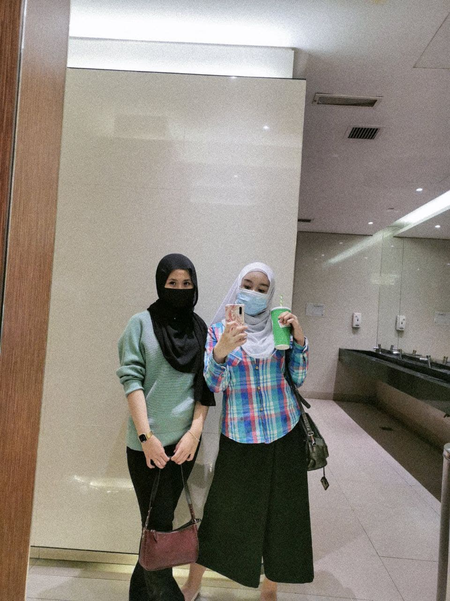
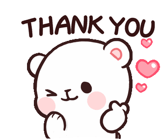

Annyeonghaseyo <3
It's all about Tyra!
Tyra's
내 인생 BLOG!
EVERYTHING YOU NEED TO KNOW ABOUT ME
"Happiness depends upon ourselves"
January 10, 2022
Hey all! Welcome to my personal website. I am so excited to share about my life with you all. Get ready to know me better!
My name is Nurathirah Shafiqah Binti Rosdin. This year I am 22 years old. I was born in Kuala Lumpur, and live in Sentul, Kuala Lumpur. We have lived in Sentul for a long time, and we've been here until now. Currently, I am a final year student in the Diploma in Information Management. Besides being busy in my studies, I also work at a law firm. Because my final semester is entirely online, I took the opportunity to gain some valuable work experience before the semester ended. It is my opinion that, if you want to do something you think you can do, there is nothing that can stop you but yourself.
During this pandemic moment, I saw many things change in the blink of an eye. So, throughout the pandemic many people do a lot of things they love to help restore mental health in order to always maintain a positive mindset. Nothing is more essential than having a family that stays together through thick and bad. My parents are the finest parents I've ever had, and they will never be surpassed in my eyes. In addition, I have two brothers and three sisters, all of whom bring a smile to my face and we will always work together to help each other out.
Members of the family
| Rosdin (Father) | ||
| Cik Sabina (Mother) | ||
| Nurazreen Shareena (Sister) | ||
| Nur Deana Shahirah (Sister) | ||
| Nurathirah Shafiqah (Me) | ||
| Muhammad Aiman Muqrish (Brother) | ||
| Muhammad Airiel Muqrish (Brother) | ||
| Nur Dania Qistina (Sister) |
Universiti Teknologi Mara Negeri Sembilan, Rembau, is where I study now. Being a student has given me a lot of fun, which I enjoy. This is the life of everything that happens, and will surely be missed. My classmates and I still need to complete the final work that is still there in order to complete this Diploma successfully. Hopefully, my path to completion of the diploma will be eased, and will then be prepared to continue our studies at the bachelor's degree level.
Family
Friend
Regardless of how exhausting studying during this epidemic was for me. I am still grateful to my lecturers and friends for assisting me with assignments, and my colleagues continue to connect and communicate with me despite our inability to meet during the epidemic. I would like to express my deepest gratitude to Puan Seri Intan Idayu Sharul Asari for her advice and ongoing monitoring, as well as for supplying the video for this project. I realise how difficult it is for lecturers to teach during this epidemic, much more so in classes without two-way contact. Teaching or being an educator is a demanding profession, but it is also a noble one. Thank you to all of the lecturers!
MY TOP 4 FAVOURITE OUTFIT IDEAS
Outfit, January 10, 2022
I am shy, socially anxious, insecure, quiet that’s what came all on it’s own. Confidence came by choice. And if you haven’t already chosen confidence and continued to choose it every time you get dressed, every time you find yourself dating, career, or life. Here are my top 4 favourite outfit ideas for boosting my self-esteem.
Open Shirt Dresses
You can take the look to another level and open it at the front, with a skirt or pants underneath. That way you're changing up the look and giving it more dimension and flare. Or you can also wear it like a cardigan, having it completely open.
Abaya LookBook 2021
Many Muslim women wear abayas as part of their day-to-day outfits, especially in the Middle East. And why wouldn’t they? Aside from being stylish, abayas are also comfortable and convenient—in fact, one of the most popular abaya styles is an open abaya.
10 Modest Fall Outfit Ideas!
While certain fashion trends may not have been initially designed to work with modest fashion, hijabi women illustrate that they can be trendy and fantastic by incorporating them into their style in a very clever manner, no matter how unorthodox. Here are some modest fall outfit ideas that I really like.
Jumpsuits
They're super chic, can be dressed up or down and they're very comfortable. You can also wear them with sneakers, slip-ons, flats or heels.
MY EXPERIENCE WORKING DURING ODL
Law Firm, October 1, 2021
Starting in early October 2021, I worked at a law firm in Solaris Mont Kiara.
I would never have chosen this job, but it was offered to me. After a week of work, the final semester lectures begin. I had previously planned in advance how I would divide my time to complete the assignments given to me according to my work and also to be able to join online classes. I am still able to follow all the learning taught in each class by the lecturers until now. Working as a student makes me very happy because I not only perform the work given by the employer, but I also learn and receive new knowledge.
Furthermore, the workplace environment is nice, as well as the staff is polite and comfortable to communicate. Furthermore, they were very helpful when I needed help because at the beginning of work I was still unfamiliar with office equipment. Moreover, I am lucky to have an employer who understand my status as a student. I have never worked for an employer who does not count and is willing to help me understand to complete all the work I need to perform. I will continue to work hard to improve my performance and acquire new skills. So far, that's all I can say, I hope i will not be stopped from having new work experience, and that if the chance comes, I would like to try something new.
Favourite Food
-
Chicken Buttermilk
🍗 -
Spicy Ramen
🍜
-
Tomyam
🍲
-

Sushi
🍣

VICENZO (2021)
Favourite Song 💯
Advertise
Gallery 💖




Subscribe
Enter your e-mail below and get notified on the latest blog posts.
